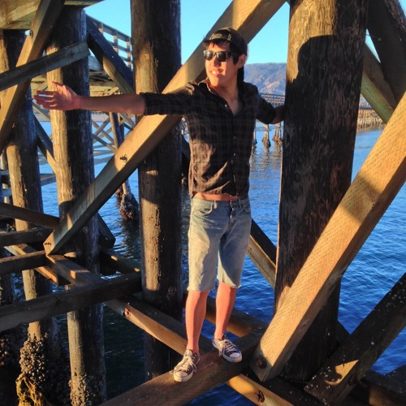

About Me
As an active and ambitious participant in life, I can honestly say that I value the root of most constructive intentions: innovation, persistence, depth, and, most importantly, bottom-shelf whiskey. Never underestimate the stellar transcendence of an underpriced spirit.
I metamorphosized from a young child to a slightly less young child in the Bay Area and ventured across the republic of California to a haven of eternal sunshine at UC Santa Barbara. Upon completing the duration of my time as an undergraduate in 2013 with a bachelor of science in chemistry, I set out to break bad and create a non-reputable pharmaceutical startup from a well-hidden trailer in the greater San Bernadino desert. One could dream, but I digress.
In the following years, I began working at several fast-growing small companies and venture capital firms based in Santa Barbara, Los Angeles and San Francisco. After learning more from my experience as a corporate wallflower and rising tech operations ninja, the scrappy world of software and hardware innovations propelled a profound inner desire to bring change with the rise of new technologies and an unparalleled strive for positive impact at the forefront innovation.
I moved back to the Bay Area to train, create, build and inspire. Coupled with a vivid imagination, I'm always open to sharing fresh ideas and new perspectives.
Feel free to slide into my DMs, and I look forward to collaborating with you all soon!
- Austin
Connect with Me